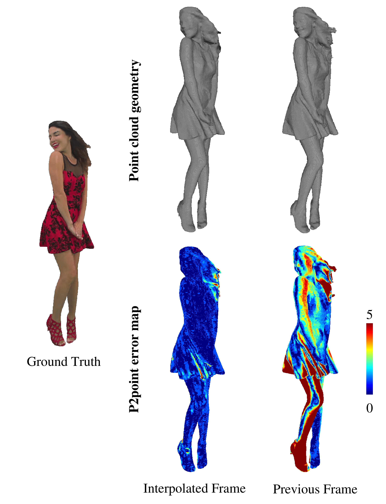
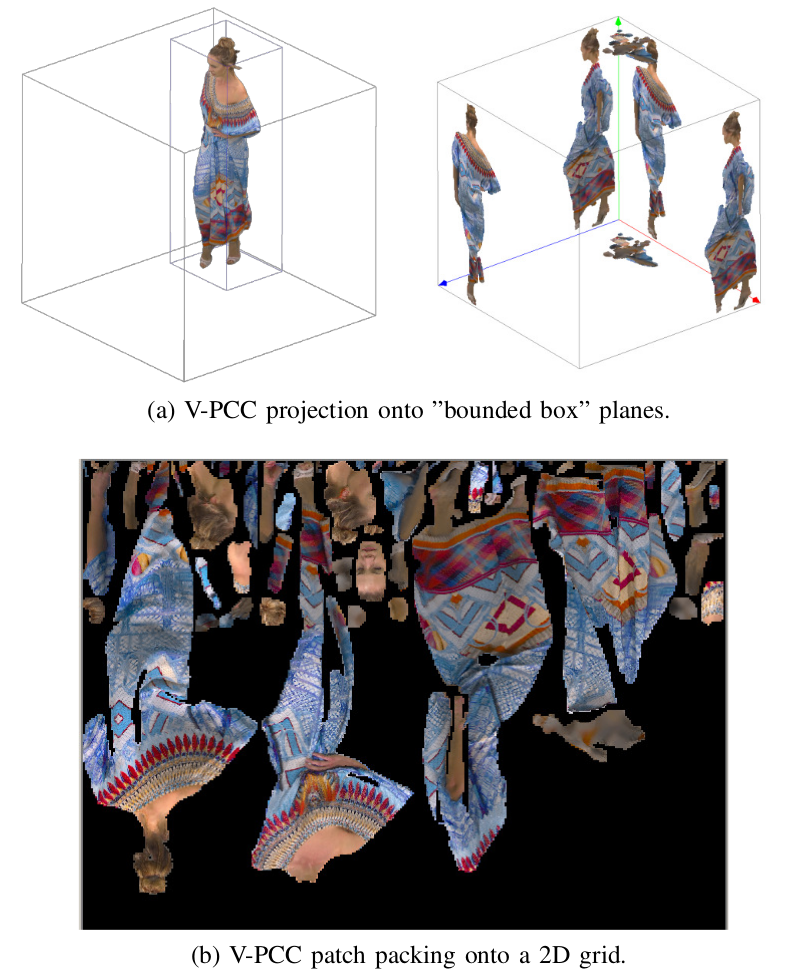
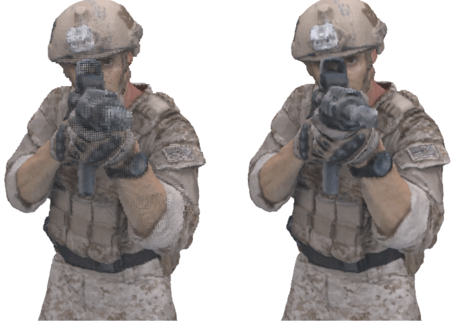
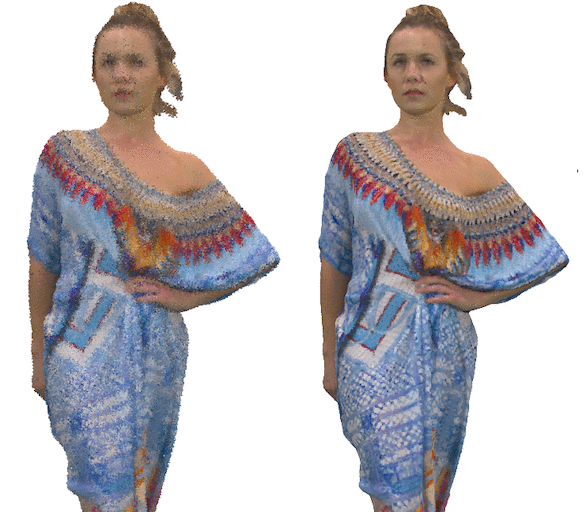
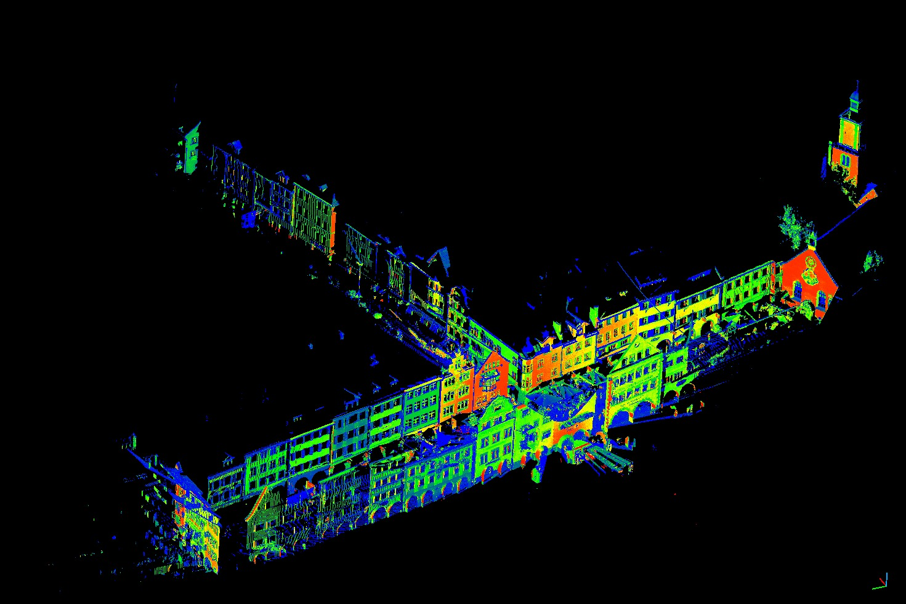
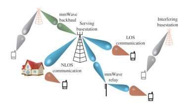

Anique Akhtar
Anique Akhtar Resume (last updated: April 2022) |
I am a Ph.D. student in the Computer and Electrical Engineering department at University of Missouri - Kansas City. I am currently working under Dr. Zhu Li in the Multimedia Computing & Communication Lab.
I did my M.S. in Electrical Engineering from Koc University, Istanbul, Turkey,
where I worked under Dr. Sinem Coleri Ergen in the Wireless Networks Laboratory on 60 GHz directional wireless Communication.
Prior to coming to Koc University, I did my B.Sc in Electrical Engineering at Lahore University of Management Sciences (LUMS), Lahore, Pakistan.
Announcements
Made an official contribution and presented work in MPEG WG 07 3D Graphics Coding meeting regarding deep learning-based dynamic point cloud coding. April 2022
Invited to MPEG WG 07 3D Graphics Coding meeting as a point cloud expert. April 2022
PU-Dense work accepted in Transactions on Image Processing (TIP). March 2022
First inventor on the patent: Point Cloud Geometry Upsampling. U.S. Patent Application 17/345,063. Jan 2022
Research
Inter-frame and Intra-frame Point Cloud Prediction Schemes.
End-to-end Point Cloud Compression.
Point Cloud Upsampling.
3D Point Cloud Semantic Segmentation.
3D Point Cloud Denoising and Outlier Removal.
Point Cloud Deep Learning Solutions.
Low Latency Visual Communication.
Neural Networks and Deep Learning.
Wireless Networks (LTE and 5G).
OFDM and Waveform design.
3GPP RAN.
MAC Protocols for Wireless Communication.
mmWave Directional Communication.
Project Work
Inter-prediction in Point Cloud Compression with Sparse Convolutional Networks
|
PU-Dense: Sparse Tensor-based Point Cloud Geometry Upsampling (Project Page) (GitHub)
|
|  | Dynamic Point Cloud Interpolation. (pdf)
|
|  | Video-based Point Cloud Compression (V-PCC) Artifact Removal. (pdf)
|
|  | Point Cloud Geometry Prediction Across Spatial Scale. (pdf)
|
2D Penoptic Segmentation on street level imagery (SLI) from HERE True Drives.
|
|  | Point Cloud Denoising.
(Noisy point cloud on the left, Denoised point cloud on the right. JPEG 8i dataset) |
|  | 3D Semantic Segmentation on HERE True LiDAR Data.
(Image on the left is from Semantic3D Dataset.) |
 |
Realtime 3D Point Cloud Communication.
(Outdoor LiDAR data from Hesai shown on the left.) |
 |
Mobile Edge Point Cloud Computing.
(Google car collecting LiDAR data shown on the left.) |
 |
Non-Deep Learning-based 3D Point Cloud Geometry Compression. |
 |
Deep Learning (Older Work)
|
 |
5G and Beyond.
|
|  | Directional mmWave Communication.
|
Publications
A. Akhtar, Z. Li, and G. Van der Auwera, “Inter-Frame Compression for Dynamic Point Cloud Geometry Coding”
Under review in a Conference. 2022A. Akhtar, Z. Li, G. Van der Auwera, L. Li, and J. Chen, “PU-Dense: Sparse Tensor-based Point Cloud Geometry Upsampling” (Project Page) (GitHub)
IEEE Transactions on Image Processing (TIP). 2022A. Akhtar, Z. Li, G. Van der Auwera, and J. Chen, “Dynamic Point Cloud Interpolation”
IEEE International Conference on Acoustics, Speech and Signal Processing (ICASSP). 2022. (pdf)A. Akhtar, W. Gao, L. Li, Z. Li, W. Jia, and S. Liu, “Video-based Point Cloud Compression Artifact Removal”,
IEEE Transactions on Multimedia (T-MM), 2021. (pdf)W. Jia, L. Li, A. Akhtar, Z. Li, and S. Liu, “Convolutional Neural Network-based Occupancy Map Accuracy Improvement for Video-based Point Cloud Compression”,
IEEE Transactions on Multimedia (T-MM), 2021.A. Akhtar, W. Gao, L. Li, Z. Li, X. Zhang, and S. Liu, “Point Cloud Geometry Prediction Across Spatial Scale using Deep Learning”,
IEEE Visual Communication & Image Processing Conf (VCIP), Hong Kong, 2020. (pdf)A. Akhtar, J. Ma, R. Shafin, J. Bai, L. Li, Z. Li, L. Liu, “Low Latency Scalable Point Cloud Communication in VANETs using V2I Communication”
IEEE International Conference on Communications (ICC), Shanghai, China. 2019. (pdf)A. Akhtar, B. Kathariya, Z. Li, “Low Latency Scalable Point Cloud Communication”
IEEE International Conference on Image Processing (ICIP), Taipei, Taiwan. 2019. (pdf)A. Akhtar, H. Arslan, “Downlink Resource Allocation and Packet Scheduling in Multi-Numerology Wireless Systems”
IEEE Wireless Communications and Networking Conference (IEEE WCNC), 2018. (pdf)A. Akhtar, S. Coleri Ergen, “Directional MAC Protocol for IEEE 802.11ad WLANs”
Ad Hoc Networks, 2018. (pdf) (Protocol's website with explanation and open source code)A. Akhtar, S. Coleri Ergen, “Efficient Network Level Beamforming Training for IEEE 802.11ad WLANs”
International Symposium on Performance Evaluation of Computer and Telecommunication Systems (SPECTS 2015), Chicago, Illinois, US. July 2015 (pdf)
Patents
A. Akhtar, W. Gao, X. Zhang, and S. Liu, TENCENT AMERICA LLC, 2022. POINT CLOUD GEOMETRY UPSAMPLING. U.S. Patent Application 17/345,063.
MPEG Contributions
m59617. “[AI-3DGC] Dynamic Point Cloud Geometry Compression using Sparse Convolutions”
Anique Akhtar, Zhu Li (UMKC), Geert Van der Auwera, Adarsh Krishnan Ramasubramonian, Luong Pham Van, Marta Karczewicz (Qualcomm)
Work Experience
Qualcomm. Current: (January. 2022 - Present)
Inter-Frame and Intra-Frame Dynamic Point Cloud COmpression.
Deep Learning-based Point Cloud Interpolation.
Point Cloud Upsampling using Deep Learning.
Tencent. 3 months: (June. 2020 - Aug 2020)
Video-based Point Cloud Compression (V-PCC) Artifact Removal.
Point Cloud Geometry Prediction.
3D Point Cloud Denoising.
End-to-End Point Cloud Compression (PCC).
HERE Technologies. 6 months: (June. 2019 - Nov 2019)
2D Building Tracking, Segmentation, and Instance Segmentation.
2D Facade Segmentation and Portal Detection.
3D Point Cloud Semantic Segmentation.
HERE Technologies. 3 months: (June. 2018 - Aug 2018)
3D Point Cloud Segmentation.
Unpublished Work
A. Akhtar, Z. Li, “Point Cloud Denoising using Deep Neural Networks”
2020. Outlier removal as well as surface denoising to achieve state-of-the-art denoising on point cloud data.A. Akhtar, Y. Yilmaz, “Machine Learning for Market Trend Prediction in Bitcoin”
2017. Using traditional financial Technical Analysis (TA) coupled with deep learning techniques to predict Bitcoin price. (pdf draft)A. Akhtar, S. Coleri Ergen, “Energy Efficient MAC Protocol with Localization scheme for Wireless Sensor Networks using Directional Antennas.”
2015. Energy efficient MAC protocol for with localization scheme using beamforming. (pdf draft)A. Akhtar, O. Ozkasap, “Multi-hop network neighbor discovery and beamforming using directional antennas in 802.11ad WLANs”
2014. Unpublished. (pdf draft)A. Akhtar, Ceyda Oguz, “Optimization of link scheduling in directional wireless networks using Heuristic methods”
2014. We propose multiple heuristic methods to solve the problem at hand and discuss how the problem behaves in different scenarios. (pdf draft)
Education
Ph.D. Computer and Electrical Engineering. - August 2016 - present
University of Missouri - Kansas City, Missouri, USA. - January 2018 - present
Expected Graduation: January 2021Advisor: Dr. Zhu Li
Research: Multimedia Computing & Communication.
University of South Florida, Tampa, Florida, USA. - August 2016 - December 2017
Research: 5G and Beyond, Machine Learning & Data Science.
Master of Science, Electrical Engineering - 2013-2015
Koc University, Istanbul. Turkey
Graduated: July 2015Advisor: Dr. Sinem Coleri Ergen
Research: Efficient Communication using 60 GHz technology in WLAN.
Bachelor of Science, Electrical Engineering - 2008-2013
Lahore University of Management Science, Lahore, Pakistan
Graduated: June 2013Advisor: Prof. Nauman Ahmad Zaffar
Thesis: Solar Sterling System.
Teaching Experience
University of Missouri-Kansas City January. 2018 - Present
Department of Computer ScienceECE/CS 479/5582, Computer Vision - Fall 2021
ECE/CS 5578, Multimedia Communication - Spring 2021
ECE/CS 484, Digital Image Processing - Fall 2020
Koc University Aug. 2013 - July 2016
Department of Electrical EngineeringELEC 317, Microprocessors - Fall 2013
ENG 200, Probability for Engineers - Spring 2014
SCI 100, Natural Sciences - Fall 2014
ENG 200, Probability for Engineers - Spring 2015
SCI 100, Natural Sciences - Fall 2015
ENG 200, Probability for Engineers - Spring 2016
Lahore University of Management Science Aug. 2012- Jan. 2013
Department of Electrical EngineeringEE 421, Digital System Design - Fall 2012